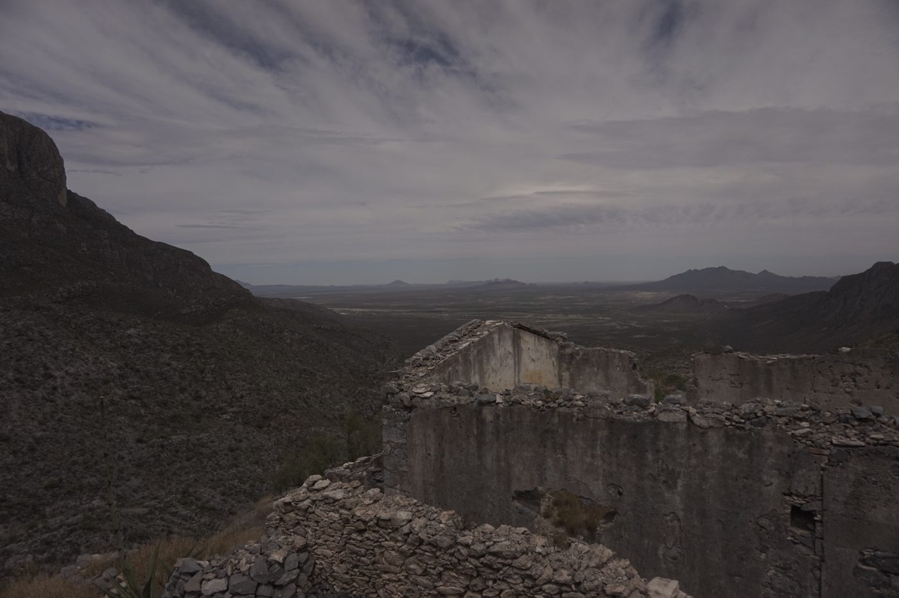

El día se equivoca.


Timelapse de la expedición LFAE, Puente de Ojuela, Durango, 8 de abril de 2024. Fotos: César Simón López-Monsalvo, Alberto Rubio Ponce y Gabriela Isabel Vera Garfias.

Timelapse de la expedición LFAE, Puente de Ojuela, Durango, 8 de abril de 2024. Fotos: César Simón López-Monsalvo, Alberto Rubio Ponce y Gabriela Isabel Vera Garfias.